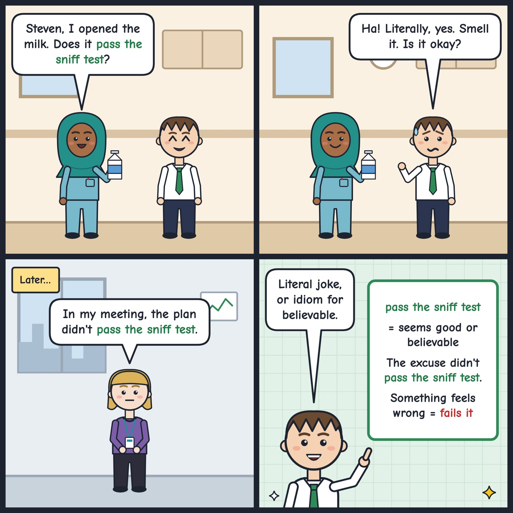

pass the sniff test
To seem good, honest or believable when you check it.
His excuse for being late didn't pass the sniff test, so Ken asked more questions.
If something 'passes the sniff test', it seems good or believable. If it doesn't, something feels wrong.

Your turn
Tell us: what story didn't pass your sniff test?
Tell us: what story didn't pass your sniff test?